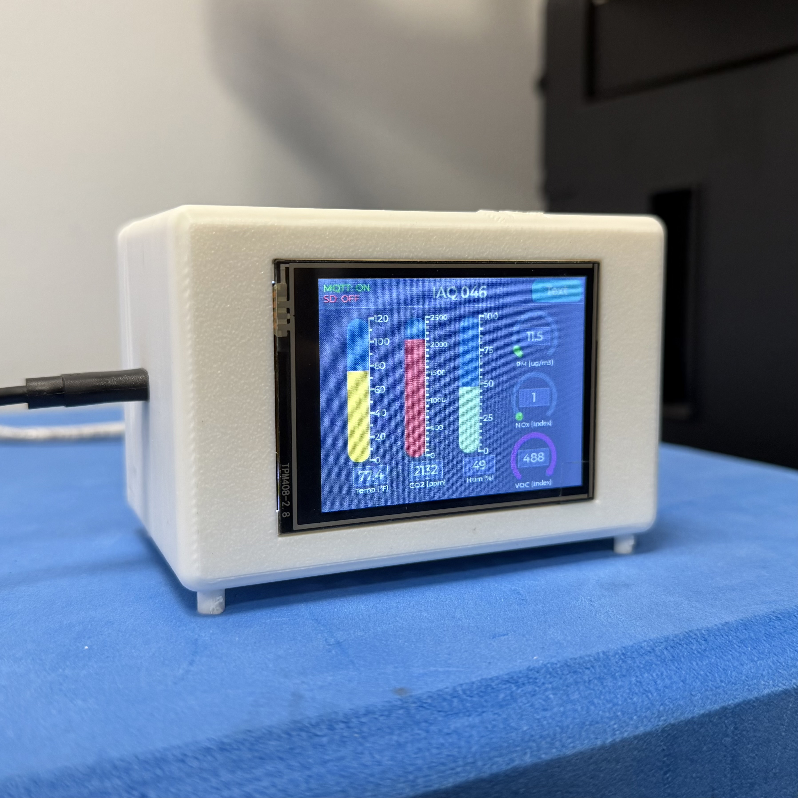

Loisaida, Inc.
Sensor Case Engineering Intern
Designed and iterated an environmental sensor enclosure from an initial laser-cut acrylic prototype to 3D-printed configurations, integrating an air-quality sensor, ESP32-based display, RF antenna, LiPo battery, and power electronics. Evaluated tradeoffs between component protection, sensor accessibility, cable routing, thermal behavior, and manufacturability.
Developed a 3D-printable hinged jig to hold internal enclosure walls during assembly, reducing assembly time from over 10 minutes to under 3 minutes. Iterated sensor placement and enclosure geometry after identifying temperature differences between enclosure configurations.
Investigated temperature measurements against a reference thermometer, determining that enclosure-induced thermal bias was not the sole source of error. Current work focuses on characterizing temperature-dependent sensor error and developing an appropriate calibration approach.
- Developed enclosure concepts through CAD and physical prototyping
- Designed components for laser-cut and FDM fabrication
- Investigated thermal effects and temperature measurement discrepancies
- Iterated designs based on testing and manufacturing constraints
